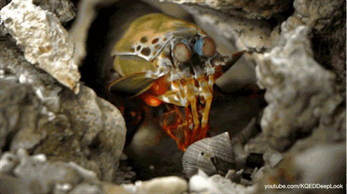

Fatos sobre o Stomatopoda
Info gerais

Odontodactylus scyllarus é o nome científico desse animal incrível que você está vendo, ele pertence a uma ordem de crustáceos marinhos chamados de Stomatopoda, que tem como uma de suas principais caracterisca a segunda pata torácica, que lembra a de um louva-a-deus.
| Reino: | Animalia |
| Filo: | Arthtopoda |
| Subfilo: | Crustacea |
| Classe: | Melacostraca |
| Subclasse: | Holocarida |
| Ordem: | Stomatopoda |
- Nomes populares
- mantis shrimp
- lagosta-boxeadora
- lagosta-louva-a-deus-palahaço
- esquila
- tamburutaca
- tamarutaca
- lacraia-do-mar
Cuiriosidades
Soco
Sim você não leu o título do site errado, a lagosta-boxeadora possui um soco que chega a incríveis 80km/h!
É um soco tão rápido que ferve a água ao seu redor criando uma pequena explosão, muitas vezes fatal para suas presas.
Com um soco tão poderoso mante-las num aquário é uma tarefa complicada já que elas podem quebrar até um aquário com vidro reforçado!
Ela é o terror dos coitados moluscos que tiverem milhões de anos para desenvolver uma super defesa pois nossa querida lagosta desenvolveu um super ataque!
Olhos
Como se ter um super soco não fosse o suficiente a lagosta-boxeadora também possui uma visão extraordinária, podendo enxergar do ultravioleta ao infravermelho.

Nossos olhos são capazes de perceber 3 cores: vermelho, verde e azul, já a lagosta enxerga 12 cores!
Beleza
Todas essas cores incríveis, manchas de leopardo, esse visual meio alienigena não da para negar que é uma criatura bem chamativa e muito linda!